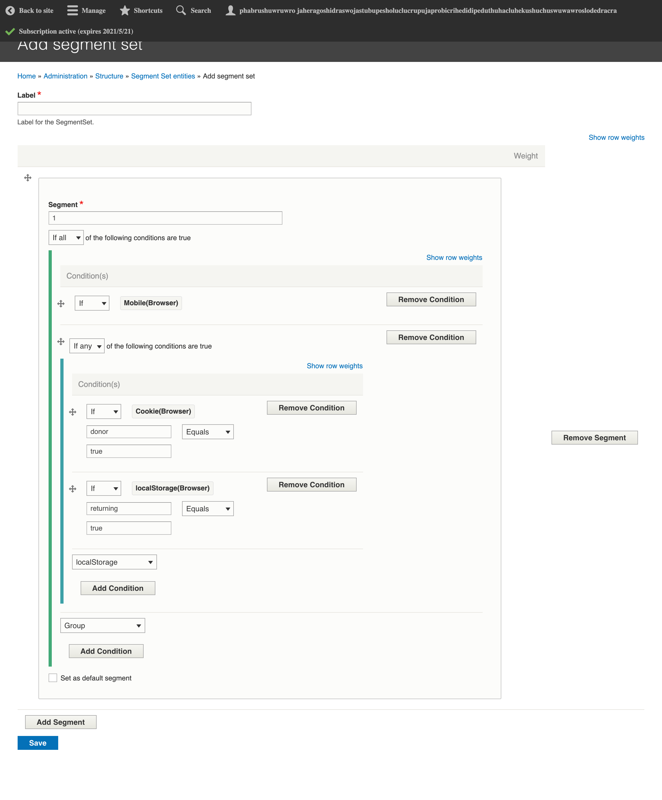
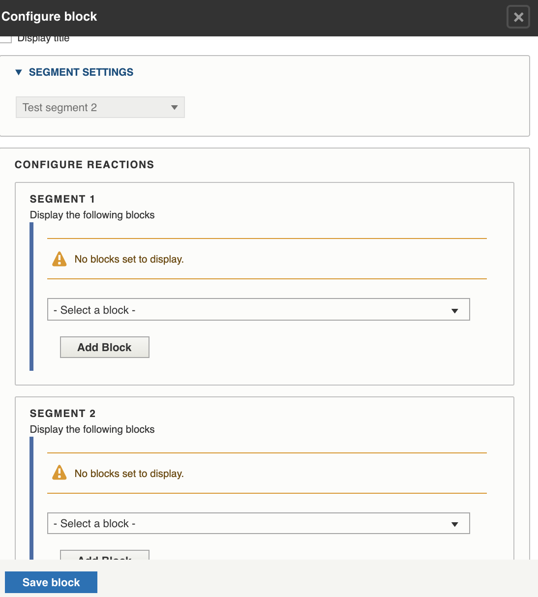

Smart blocks¶
Smart blocks provide some tools to allow us to display existing blocks based on defined conditions. How these are used depends on where the block is being placed.
Existing criteria¶
We can create smart blocks that display based on:
Device (mobile or not mobile)
Operating system
Browser language
Zipcode (as defined in localstorage as localStorage.zipCode)
visit_count [can only filter on equals, not less than/greater than]
first_visit
last_visit
role (community or professional)
In addition, we can leverage the regular block conditions. See Configuring blocks.
Note
We need to do additional work to allow for negating conditions
Creating segments¶
Segments are managed under Structure/Smart Content
Segment sets can include segments that filter on:
Conditions can be complex. In the example below, there is a condition of if the user is on mobile and either they have a donor cookie or a return user localStorage value, then the user meets this segment.
Note
Segment sets should ideally have multiple segments so that when used in a decision block, each segment can be assigned a specific block. For example, a mobile segment set might have a segment of mobile and a segment for not mobile. Then in the decision block, mobile might see block A and not-mobile would see block B.
Decision Block¶
To use these segments to deliver appropriate smart blocks, you would place a block of type “Decision block” and
Decision blocks: * Can use only one segment set * Can display only one block per segment
<div style=”border: 1 px; border-color: #CEDBE1; border-style: solid; box-shadow: 2px 0px 2px 0px #686b71;”> <div style=”background-color: #fff;”> <p style=”padding-left: 24px; font-family: Helvetica; margin-bottom: -10px;color:#181c36”>Live help<span style=”padding-left:515px”>X</span></p> <div style=”background-color: #f8fafa; color: #181c36;”> <p style=”text-align: center; font-family: Helvetica; font-weight: normal; font-size: 28px; padding: 64px 48px 64px 48px;”>Need help finding legal information or forms?</p> </div> <div> <p style=”text-align: right; margin-bottom: 20px; font-size: 16px; font-family: Helvetica;”><a style=”background: #0079d0; color: #fff; padding: 16px 32px 16px 32px; margin-right: 20px;”>Chat Now</a></p> </div> </div> </div>